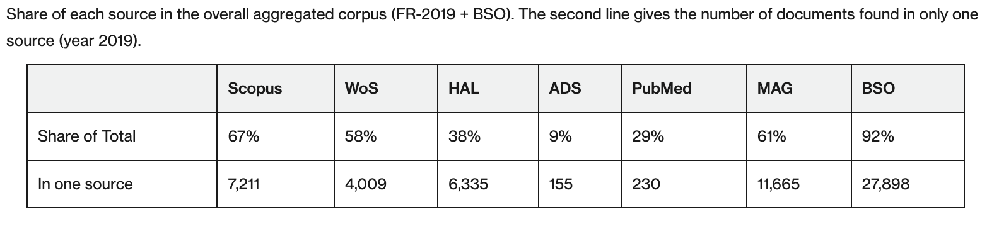
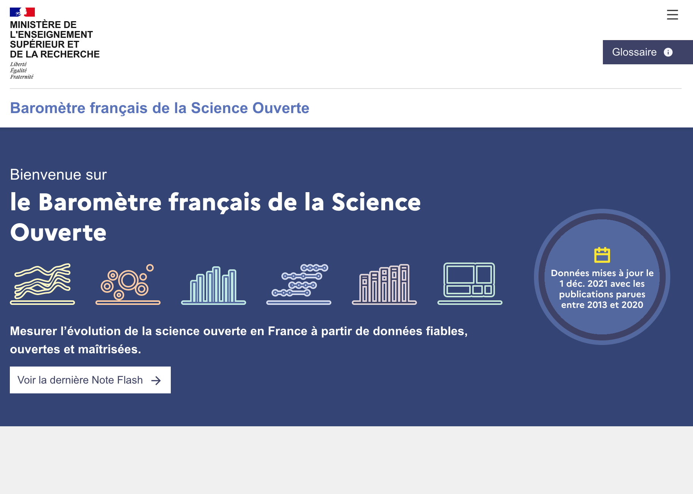

Mesurer l’évolution de la science ouverte en France à partir de données fiables, ouvertes et maîtrisées sans recourir aux bases bibliométriques propriétaires
3 octobre 2022
Eric Jeangirard
Département des outils d'aide
à la décision - MESR
Les points clés
Le Baromètre de la Science Ouverte (BSO) accompagne la politique publique de science ouverte
- 📈 depuis 2018, montrant une évolution de + de 20 points d'accès ouvert en 4 ans
- sans recourir aux sources propriétaires
- non compatibles avec le partage (⌠transparence ⌠reproductibilité)
- qui limitent la création de services ouverts
- non représentatives de la production scientifique française
- 🪆en proposant du code, des données et des services ouverts, permettant notamment la mise en place de dizaines de déclinaisons locales
- 🧠en étendant son périmètre d'analyse en fonction de la politique publique menée (notamment essais cliniques, codes et données de la recherche à venir)
Le BSO est une commande pour suivre et piloter la politique publique
- 📔 respectant plusieurs attendus, notamment
- prise en compte de la bibliodiversité
- partage et ouverture pour favoriser la transparence et la reproductibilité
- Ⳡqui s'adapte aux contraintes et évolutions de la politique publique
- première photographie de la situation de l'accès ouvert fin 2018
- extension progressive des indicateurs et du périmètre
-
🧗 Ces contraintes nous ont amené à choisir la voie difficile
- au niveau méthodologique, notamment pour la détection des affiliations et des champs disciplinaires
- au niveau opérationnel, avec une infrastructure informatique adaptée
Une approche modulaire ...

... qui capitalise et complète les sources ouvertes existantes
🏗️ : construit au MESR dans le cadre du BSO
- 🏛️ Métadonnées d'affiliations
- PubMed, CrossRef, HAL
- 🏗️ Crawling des pages web
- 🏗️ Détection automatique des pays
- 🔠Caractérisation de l'accès ouvert
- Détection de l'accès ouvert : Unpaywall
- 🏗️ Classification des types d'accès ouvert
- 🤖 Classification thématique
- Données d'entrainement : Pascal et Francis, Field of Research (FoR)
- 🏗️ Modèles de classification automatique (fastText)
Comparaison avec des principales bases internationales
Lauranne Chaignon, Daniel Egret; Identifying scientific publications countrywide and measuring their open access: The case of the French Open Science Barometer (BSO). Quantitative Science Studies 2022; 3 (1): 18–36. doi: https://doi.org/10.1162/qss_a_00179

- "The open-source strategy used by the BSO effectively identifies the vast majority of publications with a persistent identifier (DOI) for Open Science monitoring."
Des services de partage de l'information pour plusieurs usages
- 'Grand' public : site web, conçu avec l'aide de l'agence de design WeDoData https://barometredelascienceouverte.esr.gouv.fr/
- Démultipliant : fournir les moyens pour construire un BSO local (niveau établissement, laboratoire ...) très facilement et avec le même rendu que le BSO national (cf. le BSO local de l'UL)
- Expert des données : dump des jeux de données disponibles en téléchargement en csv, jsonl
- Académique : méthodologie détaillée disponible sur HAL
- Informatique : le code source est ouvert
Nouveautés 2021 : nouveau site web
Nouveautés 2021 : analyse par date d'observation

Nouveautés 2021 : volet santé

Prochaines grandes étapes
- 🗄️ Intégration d'indicateurs portant sur les données de la recherche et les codes logiciels
- 🧑‍🎓 Intégration d'indicateurs portant sur les thèses de doctorat
- 📠Nouvelles fonctionalités pour les BSO locaux (financeurs, identifiants HAL)